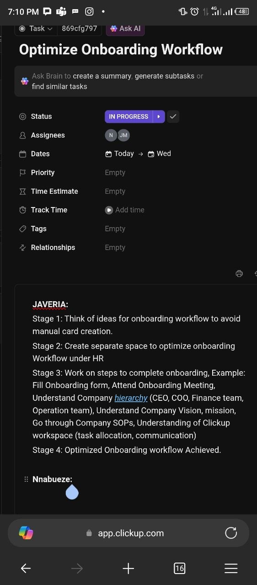
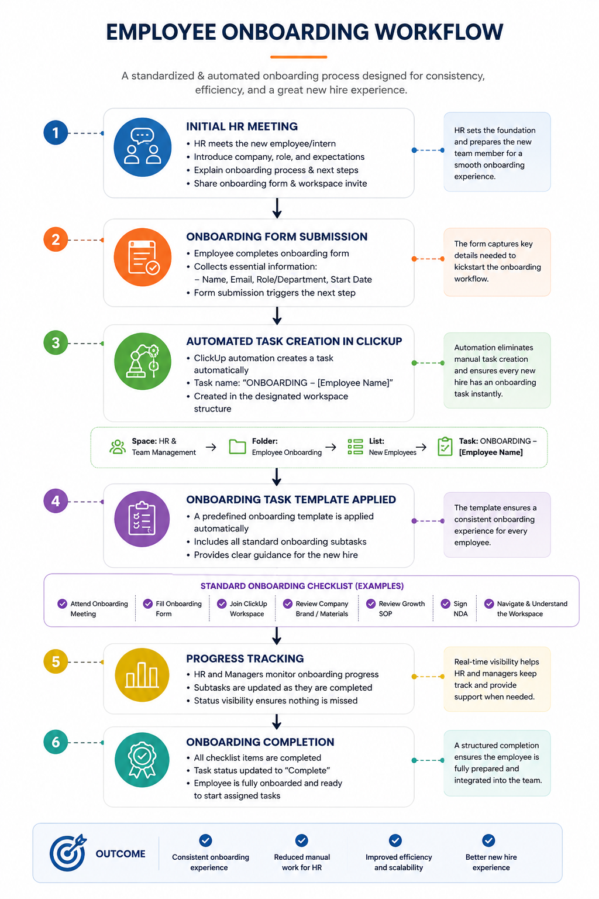
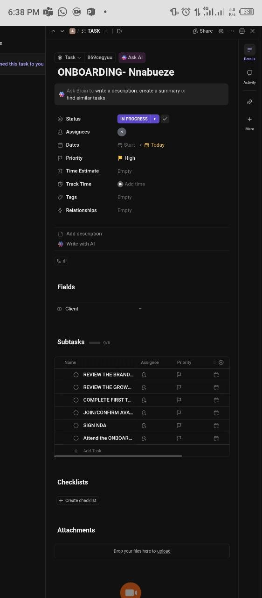

HR Operations • Workflow Design • ClickUp Automation Planning • Process Improvement
As part of an internal operations initiative at PUEPR, I was tasked with proposing an improved onboarding workflow that would reduce manual administrative work and create a standardized onboarding experience for new employees and interns. Rather than manually creating onboarding tasks for every new hire, I designed a structured workflow that introduced automation, standardized task templates, and clearly defined onboarding stages within ClickUp.
The existing onboarding process depended on HR manually creating onboarding tasks and assigning activities whenever a new employee joined the company. This repetitive process increased administrative workload, created opportunities for inconsistency, and made it difficult to maintain a standardized onboarding experience across the organization.

This ClickUp task outlined the business objective of optimizing the employee onboarding workflow by reducing manual task creation, creating a dedicated onboarding workspace, and developing a structured onboarding process for future employees and interns.

Based on the project requirements, I designed a structured onboarding workflow consisting of four operational stages: Initial HR Meeting, Onboarding Form Submission, Automated ClickUp Task Creation, and Standardized Onboarding Tasks. The proposal demonstrates how workflow design and automation planning can reduce repetitive HR administration while improving process consistency.

The proposed workflow culminates in a standardized onboarding task containing predefined subtasks that guide every new employee through the onboarding journey. Activities such as workspace access, onboarding meetings, SOP reviews, NDA completion, and company orientation are organized into a consistent checklist, helping HR deliver a repeatable and scalable onboarding experience.